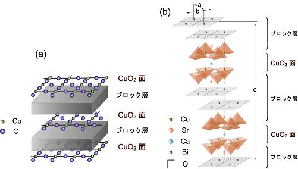

超伝導
超伝導は金属や合金を冷却していくと、ある転移温度で電気抵抗がゼロになる現象である。 もし、超伝導体を用いた送電線を使って、発電所で得られた電気が電気抵抗ゼロの状態で家庭に運ばれた場合、送電中に消失していた電気エネルギーを有効に活用することができる。 逆を言えば、発電所の発電量をごくわずかにすることができる。 また、超伝導状態においては完全反磁性を示し、磁石の力を全て反発させる性質を持っている。 次世代の移動手段として開発されているリニアモーターカーはこの性質を利用している。 このように、超伝導体をうまく活用・応用すれば、我々の生活はもっと豊かになるだろう。 しかしながら、実際に超伝導体が超伝導状態に転移する温度は、数十 K ( ~ -250°前後)ほどで、冷却媒体が高価であったり、取扱が難しいなどの問題から実用化は進んでいない。高温超伝導体
1986 年に銅酸化物を含む超伝導体がベドノルツとミューラーによって発見された。 その後数年で、超伝導転移温度は約130 K に到達した。 このような"高い"超伝導転移温度を示す超伝導体を高温超伝導体と呼んでいる。 絶縁体の印象の強い銅酸化物が、このような高い転移温度を示すことに研究者達は驚き、その注目を一心に集め、高温超伝導の発現メカニズムの解明、より高い転移温度を示す高温超伝導体の発掘に多大な時間と資金が投入された。 しかし、発見から30 年がたった現在においても高温超伝導の発現メカニズムは解明されておらず、現代固体物理学の重要課題のひとつとなっている。谷口研究室では、放射光を用いた角度分解光電子分光法で高温超伝導体の電子状態を直接観測し、高温超伝導の発現メカニズムを解明しようと日々研究を行っている。
測定試料と実験手法
測定試料は主に、ホールドープ型銅酸化物高温超伝導体で、Bi(ビスマス)系、La(ランタン)系、N(窒素)系である。 また、電子ドープ型の高温超伝導体の実測している。 2008年2月に発見された Fe(鉄)系の高温超伝導体についても精力的に研究を行っている。 実験は、広島大学放射光科学研究センター (HiSOR) の BL-9 や BL-1 で角度分解光電子分光実験を行っている。
(a) 銅酸化物高温超伝導体の一般的な結晶構造を模式的に表した図。 銅酸化物高温超伝導体は全て、ブロック層に隔てられた二次元 CuO2 面を持つ層状構造をしている。
(b) 二重層 CuO2 面をもつBi2Sr2CaCu2O8+δ の結晶構造。 黒い線が交わるところに酸素が位置している。
Pulsed Laser Deposition : PLD
谷口研究室では、銅酸化物高温超伝導体の薄膜作成も行っている。一般的な金属薄膜を作成する場合と異なり、パルスレーザー堆積法(Pulsed Laser Deposition : PLD)を用いて高品質単結晶薄膜の作成を行っている。パルスレーザー体積法は、ターゲット物質に高出力のレーザーを照射し、その時の蒸発を利用して基板上にターゲット物質を転写する手法である。
パルスレーザー堆積法の利点
● 真空外からの照射 → 酸化物系の成膜に適した環境
● 制御するパラメータが少ない。
(光の出力、パルス周波数、基盤温度、酸素分圧)
● ターゲットの組成比が基板上に転写される
● 様々な特性をもった薄膜が作製可能
レーザー光源を真空槽の外において真空外からテーゲット物質を蒸発させるためのエネルギーを加えられる。 このことによって高いガス圧下での成膜が可能となるため、強い酸化雰囲気が必要な銅酸化物高温超伝導体や巨大磁気抵抗を示すマンガン酸化物を始めとする酸化物系の成膜に適している。 また、ターゲット物質の組成と作製した膜の組成のズレがすくないことも大きな利点である。
我々は、広島大学放射光センターの準備棟に設置してあるPLD装置を用いて銅酸化物高温超伝導体YBCOなどの薄膜単結晶試料を作製している。

PLD 装置
レーザー光源がチャンバーの外側に設置されているため、非常にシンプルな構造をしている。 奥に見える赤い箱がレーザー光源である。
ここでは、銅酸化物高温超伝導体 YBa2Cu3O7 (YBCO) をPLD を用いて作製する過程を紹介する。
1、 Y:Ba:Cu = 1:2:3 の比で混ぜ合わせ焼成し、押し固めターゲット物質を作製する。
2、ターゲット物質を真空チャンバー内に導入し、チャンバー内を酸素雰囲気にする。
3、パルスレーザー光を照射する。
4、レーザー光とターゲット物質の相互作用でターゲット物質の温度が上昇し、励起蒸発種による発光が見られる。
5、蒸発柱(Plume) が形成され表面から数原子層が飛散し、基盤に蒸着される。


Seminer
High-Tc グループで行っているセミナーは以下のとおりです。
| セミナ― | 日時 | 場所 | 内容，目的 | 世話人 | 備考 |
|---|---|---|---|---|---|
| グループミーティング | 毎週月曜日17：30 頃から | 理学部Ｄ棟2階 203号室 | 超伝導に関する基本的な知識を身に着ける。 | 井野明洋 (助教) | 研究の進行状況や連絡事項など情報を共有する。 |
講読テキスト
- 2008 年度 Theory of Superconductivity, J. R. Schrieffer (Addison Wesley)
- 2009 年度 論文紹介
研究成果
Introduction
超伝導状態において金属は電気抵抗ゼロやマイスナー効果などの特異な物性を示す。
その発現機構はBardeen-Cooper-Shriefferによって提案されたBCS理論により明らかにされた。
それは、電子格子相互作用によって二つの電子がクーパー対を形成し、ボーズ凝縮を起こすことによって発現する。
銅酸化物高温超伝導体においては電子格子相互作用や磁気的相互作用などが対形成に関与している可能性が議論されているが、まだ解明には至っていない。
実験は、角度分解光電子分光(ARPES)法を用いる。 ARPES実験は多体相互作用が繰り込まれた準粒子の構造を、エネルギー・波数空間に分解して直接観測でき、準粒子バンドを直接観測することが可能である。 これまで、フェルミ面上に開くd波の超伝導ギャップや、キンク構造などがARPESで観測されている。
実験は、角度分解光電子分光(ARPES)法を用いる。 ARPES実験は多体相互作用が繰り込まれた準粒子の構造を、エネルギー・波数空間に分解して直接観測でき、準粒子バンドを直接観測することが可能である。 これまで、フェルミ面上に開くd波の超伝導ギャップや、キンク構造などがARPESで観測されている。
研究の特色
我々の研究の特色は、低エネルギー放射光を用いる点である。
通常のエネルギーの励起光を用いた実験よりも低エネルギー放射光を用いることで、高いエネルギー・波数分解能と強いバンド選択性が得られることを実証した。
現在、エネルギー可変の放射光を用いた低エネルギー高分解能角度分解光電子分光実験が可能なのは、世界の中で、広島大学放射光センター (HiSOR BL-9) だけである。
放射光施設が身近にある環境を最大限に生かし、銅酸化物高温超伝導体の発現メカニズムについて日夜研究を行っている。
研究成果
銅酸化物高温超伝導体Bi2212の低エネルギー放射光角度分解光電子分光実験を行った。
CuO2二重層間の電子のホッピングに由来する、二重層分裂をノード方向において明瞭に観測した。
ノード方向準粒子の散乱確率は超伝導相では常伝導相に比べ約７０％抑制されることがわかった。
また、低結合エネルギー領域において、反結合バンドの散乱確率が結合バンドの散乱確率より大きくなり、結合バンドが反結合バンドに比べ超伝導に有利な状況にあることが示唆された。
T. Yamasaki et al., Physical Review B 75, 140513(R) (2007)
T. Yamasaki et al., Physical Review B 75, 140513(R) (2007)